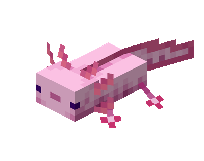
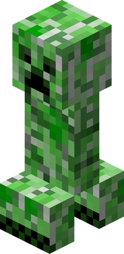
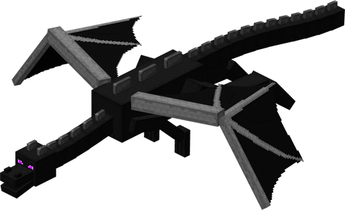

Axolotl

El Axolotl es la criatura más adorable de Minecraft
- Tipo:
- Pacífico
- Salud:
- 14 HP
- Daño:
- 2 puntos (dificultad fácil, normal y difícil)
- Experiencia:
- Mínimo 1, Máximo 3 XP
Explora nuestro catálogo completo de criaturas de Minecraft con datos reales de la API Astroworld.
Descubre algunas de las criaturas más interesantes y únicas

El Axolotl es la criatura más adorable de Minecraft

El Creeper es la criatura más temible de Minecraft

El Ender Dragon es la criatura más poderosa de Minecraft
Disfruta del tráiler oficial de Minecraft